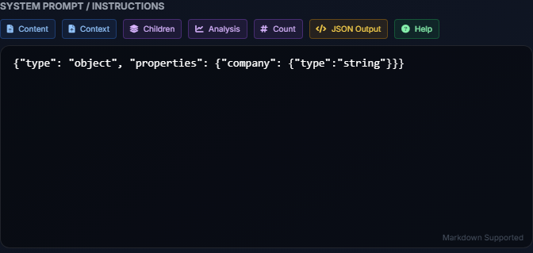

Agent Tool Factory
The Tool Factory upgrades standard prompts into persistent, actionable Tools that can generate physical files (Excel, Word, CSV) based on document data.

Anatomy of a Custom Tool
A Tool bundles three components together:
- System Instructions: What the AI needs to extract.
- Output Template (Optional): The physical Excel (.xlsx) or Word (.docx) file it will map the extracted data into.
- Context Requirements: Whether the tool requires run-time comparison documents (e.g., a "Contract Variance" tool might require the user to attach a standard Company Policy document every time it runs).
Enforcing Structure: JSON Intent
For an Agent Tool to reliably populate an Excel spreadsheet, the AI must output a clean JSON structure, not messy text. To do this, you must construct the prompt with explicit **JSON Intent**.

Good Practice:
IMPORTANT: Provide actual numerical values from the document in a structured JSON format.
Do not use placeholders. If data is missing, state 'Not Found'.
Example expected output:
{
"InvoiceTotal": "1500.00",
"VendorName": "Acme Corp"
}
JSON Helper Button: The Tool Factory editor includes a "JSON Output" button that
automatically injects the exact verbiage required to force the LLM into strict JSON mode.
Uploading and Mapping Templates
To have Parsifi generate downloadable files for you:
- Navigate to the Templates tab in the Tool Factory.
- Upload a blank Excel (.xlsx) or Word (.docx) file.
- In your uploaded Template file, wrap your target cells or text in double braces. Example: Type
{{InvoiceTotal}}in cell B2. - In your Tool Prompt, ensure the AI is instructed to output a JSON key named exactly
"InvoiceTotal".
When the Tool is run against a document, Parsifi extracts the JSON, maps InvoiceTotal to cell
B2, and provides the finished Excel file for download directly on the Dashboard.